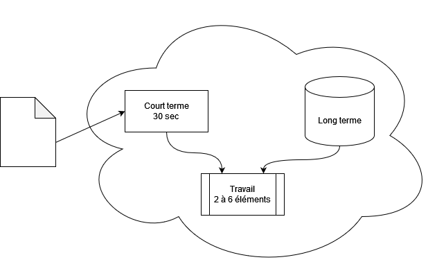

Nommages : réduire sa charge cognitive
Apéro PHP 18/04/2023

Fred Blanc
github.com/blanc-frederic
Lead dev chez SAFTI
En moyenne, nous passons 58% de notre temps
de développement à la compréhension du code
Alors pourquoi c'est si difficile ?
Résolution de problèmes et logique : activités mathématiques
Lecture de code et analyse : activités linguistiques
Que se passe t'il quand on lit du code ?
Comment aider le cerveau ?
Complexité légitime : découper
Complexité accidentelle : supprimer ou masquer
Aider la mémoire court terme
Identifier rapidement les structures et points d'infos
Aider la mémoire de travail
Découper en morceaux plus digestes
Aider la mémoire long terme
Retrouver facilement des schéma connus
Merci !
Des questions ?
Sources
- Clean code - Robert C. Martin
- The programmer's brain - Felienne Hermans